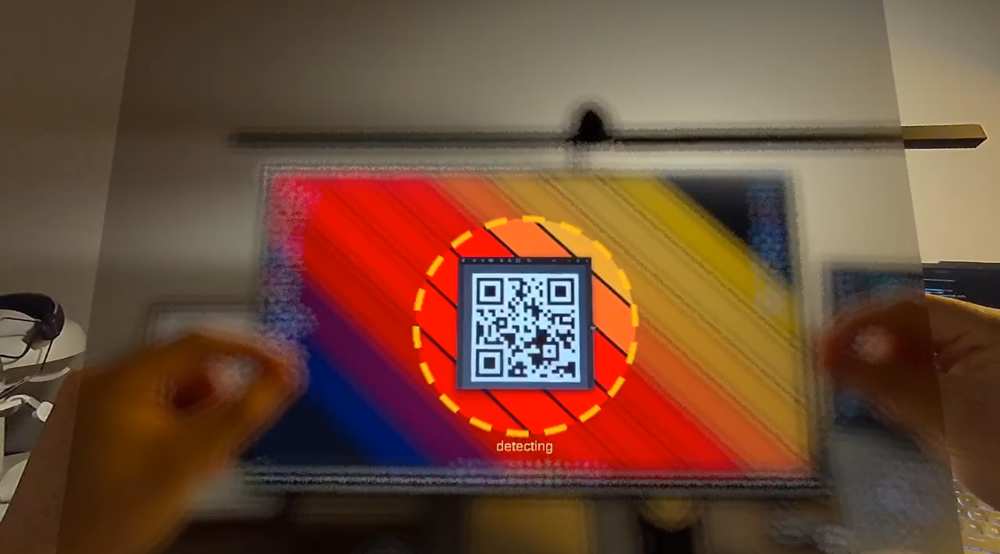
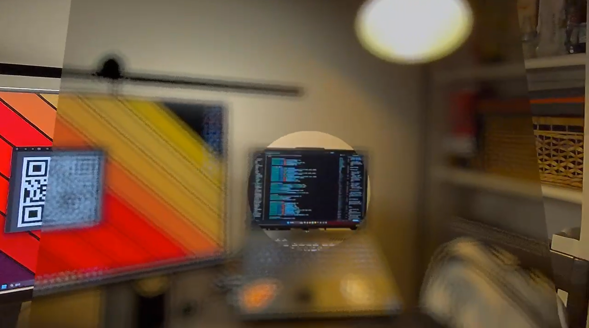
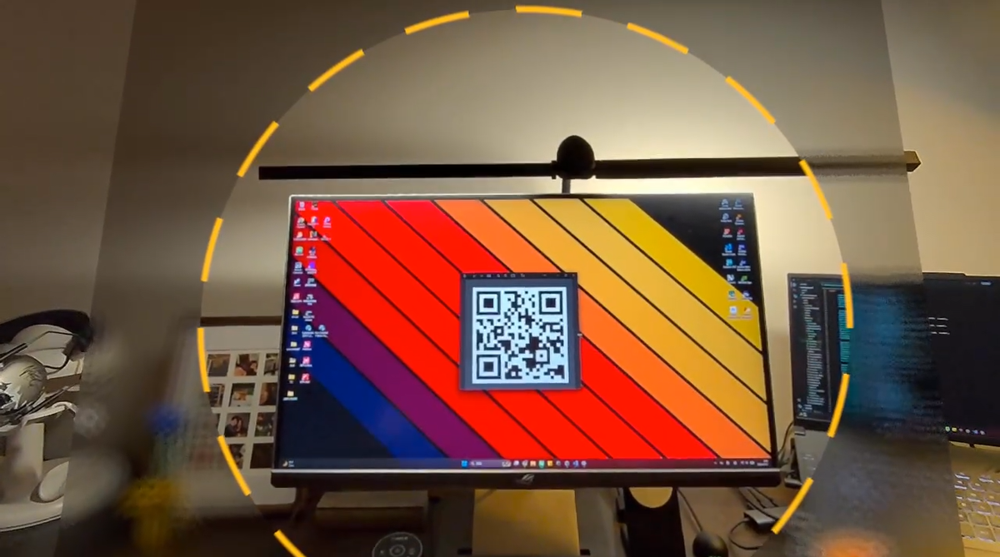
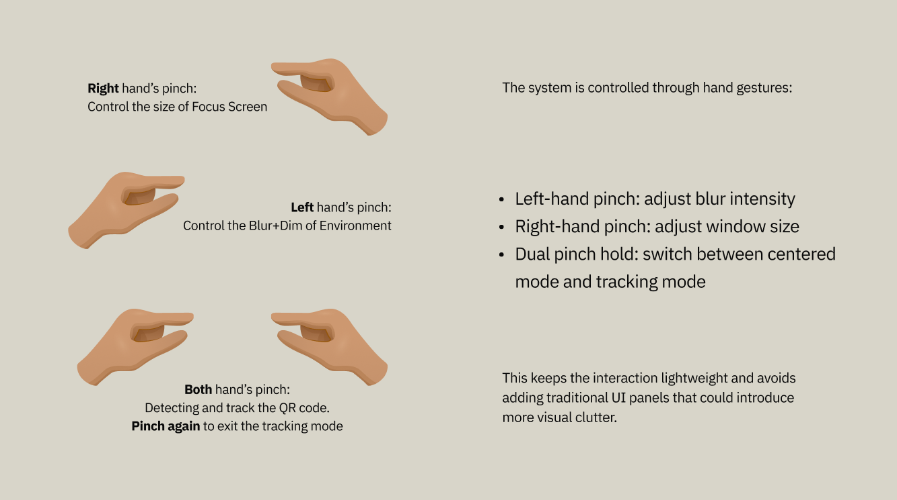

SELECTED WORK
Adaptive Focus
Window
A mixed reality system designed to reduce visual distraction for users with ADHD
Passthrough VR
Attention Guidance
Unity
SCROLL
Reason
People with ADHD can be easily overwhelmed by visually busy environments. In everyday spaces, too many surrounding objects, movements, and details can compete for attention at once. This project explores whether passthrough VR can reduce that overload by selectively blurring unimportant areas of the environment and preserving clarity only where attention is needed.
Main Demo
Experience Overview
State 1 - Centered Focus

A clear circular window stays in a fixed position. This mode helps the user reduce surrounding visual noise while keeping attention near the center of view.
State 2 - Object-Locked Focus

The clear window follows a detected target. This mode helps the user stay focused on a specific object while the rest of the environment remains blurred.
Tracking Logic
To support object-locked attention, the system uses QR-code tracking as a stable positional target. Once a valid target is detected, the clear viewing window follows its position. This allows the user to keep visual focus on one chosen object while all surrounding information remains blurred.
"Why QR instead of general object detection?"
QR tracking was chosen because it is faster, more stable, and less computationally heavy than the object detection approaches tested earlier.
Interaction Flow

Technical System
The project is built as a processed video panel approach in Unity rather than a native full-screen passthrough post-process. Passthrough camera frames are remapped onto a front-facing panel, where a shader creates a clear circular region and a blurred outer area. Runtime controls update blur strength, window size, and target-following behavior.